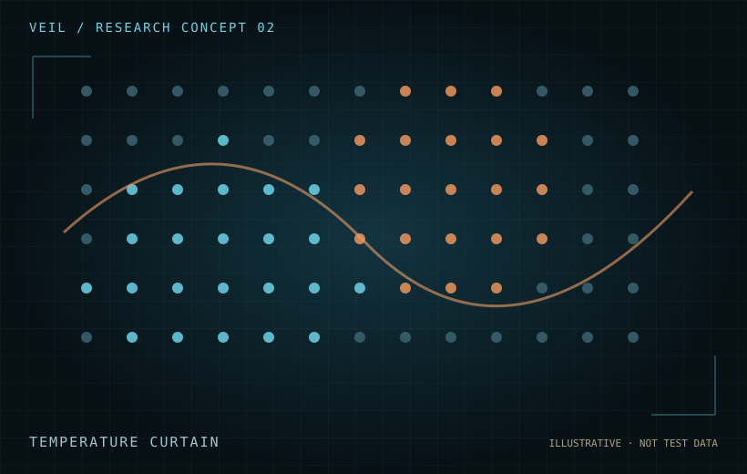

Virtual model
The research concept includes a 196-sensor virtual configuration and an initial 1.5°C event threshold, subject to calibration.
A spatial grid of thermal sensors intended to investigate movement, shapes, thermal persistence and environmental interactions.

The research concept includes a 196-sensor virtual configuration and an initial 1.5°C event threshold, subject to calibration.
Use controlled heat and cold sources, track trailing patterns and assess effects from HVAC, people, equipment and room geometry.
Correlate sensor maps with reference thermal imaging and conventional temperature sources.
VEIL’s planned instruments share a common emphasis: synchronized measurement, rigorous controls, raw evidence preservation and transparent review.
Contact · Collaborate · Support →